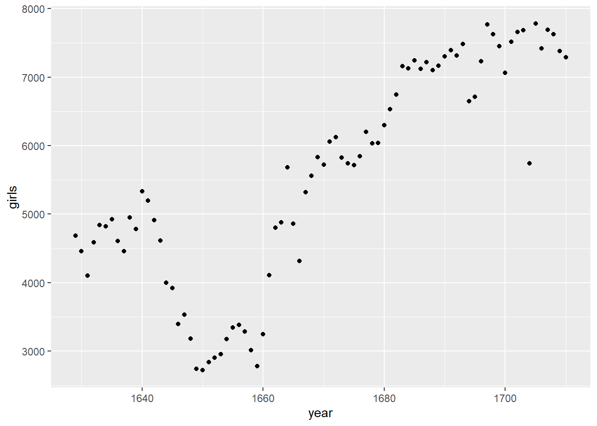
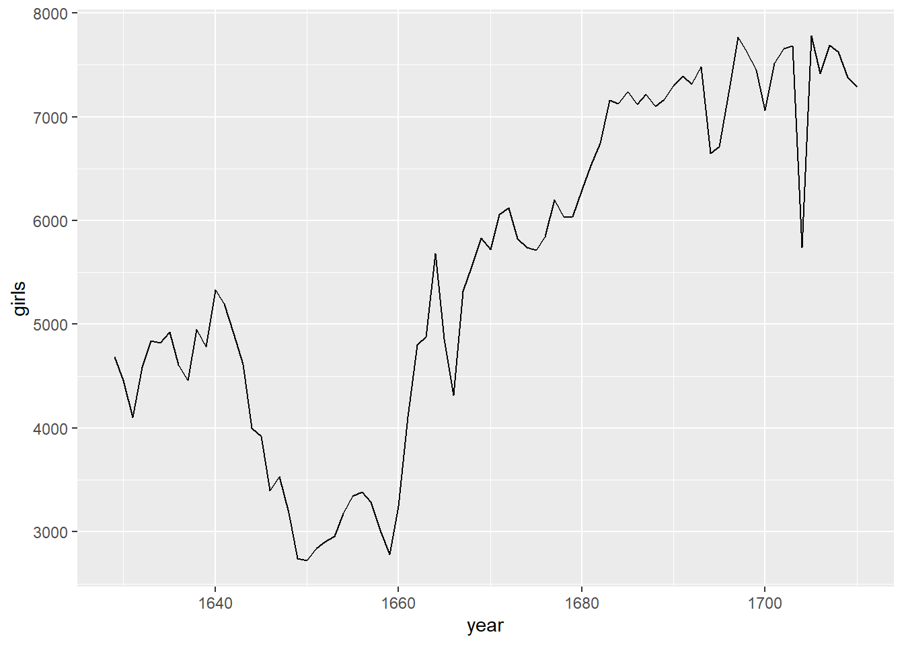
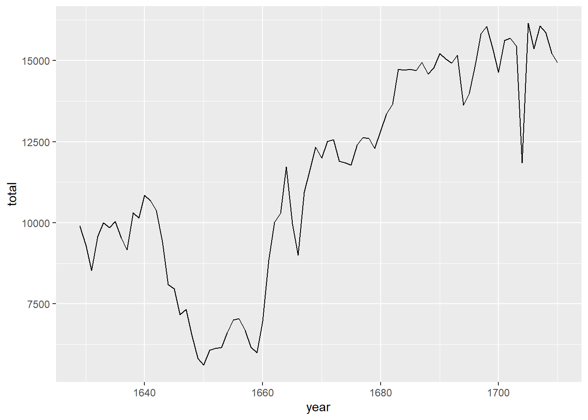

Code
install.packages("tidyverse")
install.packages("openintro")Bu dersin amacı, sizi R ve RStudio ile tanıştırmaktır. Bu programları ders boyunca hem istatistiksel kavramları öğrenmek hem de gerçek verileri analiz ederek bilinçli sonuçlara ulaşmak için kullanacaksınız. Öncelikle hangisinin ne olduğuna açıklık getirelim:
R programlama dilinin kendisinin adıdır, RStudio ise R ile çalışmak için kullanılan kullanışlı bir arayüzdür.
Ders ilerledikçe, size verilen yönergelerin ötesinde keşif yapmanız teşvik edilmektedir; denemeye ve kurcalamaya istekli olmak sizi çok daha iyi bir programcı yapacaktır! Ancak o aşamaya gelmeden önce R içinde temel bir akıcılık kazanmanız gerekir.
Şimdi RStudio’yu açın. Aşağıda gösterilen resme benzeyen bir pencere görmelisiniz.

Sol alttaki panel, işlerin gerçekleştiği yerdir. Bu panele konsol (console) denir. Her RStudio’yu açtığınızda, konsolun en üstünde çalıştırdığınız R sürümünü gösteren aynı metni görürsünüz. Bu bilginin hemen altında ise > sembolü ile gösterilen komut istemi (prompt) bulunur. Adından da anlaşılacağı gibi bu istem aslında bir talep niteliğindedir: sizden bir komut bekler.
Başlangıçta R ile etkileşim tamamen komut yazmak ve çıktıyı yorumlamaktan ibarettir. Bu komutlar ve sözdizimleri on yıllar boyunca (gerçekten) gelişmiş ve günümüzde birçok kullanıcıya veriye erişmek, verileri düzenlemek, tanımlamak ve istatistiksel hesaplamaları yürütmek için oldukça doğal bir yol sunar.
Sağ üstteki panelde, ortamınız (environment) ve daha önce girdiğiniz komutların geçmişi (history) bulunur.
Sağ alttaki panelde ise proje klasörünüzdeki dosyaları (files) inceleyebileceğiniz, R fonksiyonlarına ait yardım (help) dosyalarına ulaşabileceğiniz, R paketlerini (packages) yükleyip yönetebileceğiniz ve görselleştirmeleri inceleyebileceğiniz sekmeler yer alır. Varsayılan olarak, oluşturduğunuz tüm görselleştirmeler onları üretmek için yazdığınız kodun hemen altında görünür. Eğer grafiklerinizin plots sekmesinde görünmesini tercih ederseniz, genel ayarlarınızı (global options) değiştirmeniz gerekir.
R açık kaynaklı (open-source) bir programlama dilidir. Yani kullanıcılar hayatımızı kolaylaştıracak paketler geliştirebilir ve biz bu paketleri ücretsiz olarak kullanabiliriz.
tidyverse: Veri düzenleme (data wrangling) ve veri görselleştirme için birçok farklı R paketini barındıran bir “şemsiye” pakettir.
openintro: OpenIntro kaynaklarıyla birlikte gelen veri setleri ve özel fonksiyonlar için kullanılan bir R paketidir.
Sağ alttaki köşede bulunan Packages sekmesine tıklayın. Arama kutusuna bu paketlerin isimlerini (tidyverse, openintro) yazın ve kurulu olup olmadıklarını kontrol edin. Eğer bu paketler yazdığınızda görünmüyorsa, aşağıdaki iki satır kodu RStudio oturumunuzdaki konsola kopyalayıp yapıştırarak (veya yazarak) kurabilirsiniz. Her satırı yazdıktan sonra mutlaka Enter/Return tuşuna basın.
install.packages("tidyverse")
install.packages("openintro")Enter/Return tuşuna bastıktan sonra, seçtiğiniz konumdan paketi kurarken R’ın yürüttüğü işlemleri gösteren uzun bir metin akışı başlayacaktır. Eğer R’ı yüklerken paketleri indirmek için bir sunucu seçmeniz istenmediyse, RStudio sizden bir sunucu seçmenizi isteyebilir; bu sunucuların herhangi birini seçmeniz yeterlidir.
Paketleri kurma (install) işlemini yalnızca bir kez yapmanız gerekir, ancak RStudio’yu her yeniden açtığınızda paketleri yüklemeniz (load) gerekir. Paketleri yüklemek için library fonksiyonunu kullanırız. tidyverse ve openintro paketlerini çalışma ortamınıza yüklemek için aşağıdaki iki satırı konsolunuza kopyalayıp yapıştırın (veya kendiniz yazın
library(tidyverse)
library(openintro)tidyverse paketini veriyle çalışmanın farklı yönleri için gerekli olan paketler bütününden oluşur; veriyi yüklemekten (loading), düzenlemeye (wrangling), görselleştirmeye (visualizing) ve analiz etmeye (analyzing) kadar her aşamayı kapsar. Ayrıca bu paketler ortak felsefeleri paylaşır ve birlikte çalışacak şekilde tasarlanmıştır. tidyverse paketleri hakkında daha fazla bilgiyi tidyverse.org adresinde bulabilirsiniz.
Bu ders kapsamında kullanacağız CTT, ltm ve mirt paketlerini yükleyiniz.
Java ve Rtools sadece Windows kullanıcıları için gereklidir.
Yeniden üretilebilir (reproducible) laboratuvar raporları oluşturmak için R Markdown kullanacağız. Bunun neden ve nasıl yapılacağını açıklayan videoları aşağıda bulabilirsiniz:
Why use R Markdown for Lab Reports?
Using R Markdown for Lab Reports in RStudio
Kısaca, RStudio’da New File → R Markdown… yolunu izleyin. Ardından “From Template” seçeneğini seçin ve listeden Lab Report for OpenIntro Statistics Lab 1 şablonunu seçin.
Bundan sonra kodunuzu doğrudan konsola yazmaktan kaçınmalısınız; çünkü bu şekilde yazmak istediğiniz çıktıyı hatırlamayı ve yeniden üretmeyi çok zorlaştırır. R Markdown dosyalarının belki de en önemli özelliği, R kodunu yazılı raporun içine gömmemize izin vermesidir. Bir R Markdown dosyasında R kodu gri kutular içinde görünür, biz bunlara “kod parçacıkları (code chunks)” diyoruz. R Markdown, bu gri kutuların R kodu içerdiğini, üç tane ters tırnak işareti (```) ile başlayıp ardından süslü parantezler içinde küçük r harfi ({r}) yazmasından anlar. Bunu zaten yukarıda görmüştünüz!
Kodlarımızı konsola yazmak yerine, her problem için ayrılmış R kod parçacıklarının içine (doğru yanıt veya sadece denediğiniz kodlar fark etmez) yazmanızı tavsiye ediyoruz. Bu kod parçacıklarındaki R kodunu, konsolda yaptığınız gibi çalıştırabilirsiniz. Bir kod satırını çalıştırmak için iki yol vardır:
İmleci kod satırının üzerine getirin ve aynı anda Ctrl-Enter (veya Mac’te Cmd-Enter) tuşlarına basın.
İmleci kod satırının üzerine getirin ve R Markdown dosyasının sağ üst köşesinde yer alan “Run” butonuna tıklayın.
Eğer bir kod parçacığındaki tüm R kodunu çalıştırmak isterseniz, o kod parçacığının sağ üst köşesindeki “Play” butonuna (yeşil üçgen) tıklayabilirsiniz.
Herhangi bir noktada en baştan başlamak ve belirli bir kod parçacığından önceki tüm kod parçacıklarını çalıştırmak isterseniz, o kod parçacığının sağ üst köşesindeki “Fastforward” butonuna (altında çizgi olan gri ters üçgen) tıklayın. Bu, o parçacıktan önceki tüm kodları çalıştırır, ancak seçtiğiniz kod parçacığındaki R kodunu çalıştırmaz.
Başlamak için, hadi veriye kısa bir göz atalım.
arbuthnotYukarıdaki kodu çalıştırmak için şunları yapabilirsiniz:
İmleci satırın üzerine getirip Ctrl-Enter (veya Mac’te Cmd-Enter) tuşlarına basmak,
İmleci satırın üzerine getirip R Markdown dosyasının sağ üst köşesindeki “Run” butonuna tıklamak, ya da
Kod parçacığının sağ üst köşesindeki yeşil oka tıklamak.
Bu kod parçacığında yer alan tek satırlık komut, R’a bazı verileri yüklemesini söyler: erkek ve kız çocuklarının Arbuthnot vaftiz sayıları. Şimdi RStudio penceresinin sağ üst köşesindeki Environment sekmesinde arbuthnot adında, 82 gözlem ve 3 değişkenden oluşan bir veri seti listelendiğini görmelisiniz. R ile çalışırken çeşitli amaçlarla nesneler (objects) oluşturursunuz. Bazen bu nesneleri bir paketi yükleyerek çalışma alanınıza getirirsiniz (burada yaptığımız gibi), bazen de bir hesaplama süreci, yaptığınız bir analiz veya oluşturduğunuz bir görselleştirme sonucunda kendiniz oluşturursunuz.
Arbuthnot veri seti, 18. yüzyıl hekim, yazar ve matematikçi Dr. John Arbuthnot’un çalışmasına dayanmaktadır. Arbuthnot, erkek ve kız bebeklerin doğum oranıyla ilgilenmiş ve 1629’dan 1710’a kadar Londra’da doğan çocukların vaftiz kayıtlarını toplamıştır. Veriye yeniden bakmak için aşağıdaki kodu çalıştırabilir veya veri setinin adını doğrudan konsola yazabilirsiniz. Dikkat edin: yazım ve büyük/küçük harf kullanımı önemlidir! R büyük/küçük harfe duyarlıdır; eğer yanlışlıkla Arbuthnot yazarsanız, R bu nesnenin bulunamadığını söyleyecektir.
arbuthnotBu komut veriyi bizim için gösterir, ancak tüm veri setini konsolda yazdırmak çok da kullanışlı değildir. RStudio’nun avantajlarından biri, dahili bir veri görüntüleyici (Data Viewer) ile gelmesidir. Sağ üst paneldeki Environment sekmesi, ortamınızdaki nesneleri listeler. Burada arbuthnot ismine tıkladığınızda, R Markdown dosyanızın yanında yeni bir Data Viewer sekmesi açılır ve veri setini alternatif bir şekilde görüntülemenizi sağlar. Bu görünüm, veriyi Excel’de incelemeye benzer; veri setini kaydırarak satırları inceleyebilirsiniz. Ancak Excel’den farklı olarak, bu sekmede veriyi düzenleyemezsiniz. İnceleme işiniz bittiğinde, sekmeyi sol üst köşesindeki x işaretine tıklayarak kapatabilirsiniz.
Veriyi incelerken, dört sütun ve 82 satır görmelisiniz. Her satır, Arbuthnot’un veri topladığı farklı bir yılı temsil eder. Her satırdaki ilk değer satır numarasıdır (istersek belirli yıllara erişmek için kullanabileceğimiz bir indeks). İkinci sütun yıl bilgisini, üçüncü ve dördüncü sütun ise o yıl vaftiz edilen erkek ve kız çocuklarının sayılarını gösterir. Konsol penceresinin sağındaki kaydırma çubuğunu kullanarak veri setinin tamamını inceleyebilirsiniz.
Dikkat edin: İlk sütundaki satır numaraları Arbuthnot’un verilerinin bir parçası değildir. R bu satır numaralarını, çıktıda görsel karşılaştırma yapmanıza yardımcı olmak için ekler. Bunları, bir elektronik tabloda sol tarafta gördüğünüz indeks gibi düşünebilirsiniz. Aslında, veriyi bir tabloya (spreadsheet) benzetmek genelde faydalıdır. R, Arbuthnot’un verilerini elektronik tabloya benzeyen bir nesne içinde saklamıştır; R bu tür nesnelere data frame (veri çerçevesi) adını verir.
Bu veri çerçevesinin boyutlarını, değişken adlarını ve ilk birkaç gözlemini görmek için veri setinin adını glimpse() fonksiyonunun içine yazabilirsiniz, aşağıda görüldüğü gibi:
glimpse(arbuthnot)Daha önce tüm R kodunuzu kod parçacığına (code chunk) yazmanın en iyi uygulama olduğunu söylemiş olsak da, bu komutu konsola yazmanız daha doğru olur. Genel kural olarak, çözümünüz için gerekli olan tüm kodları kod parçacığına yazmalısınız. Ancak bu komut yalnızca veriyi keşfetmek için kullanıldığından, çözüm kodunuz için gerekli değildir ve çözüm dosyanıza eklenmemelidir.
Bu komutun çıktısı aşağıdaki gibi olmalıdır:
Rows: 82
Columns: 3
$ year <int> 1629, 1630, 1631, 1632, 1633, 1634, 1635, 1636, 1637, 1638, 1639…
$ boys <int> 5218, 4858, 4422, 4994, 5158, 5035, 5106, 4917, 4703, 5359, 5366…
$ girls <int> 4683, 4457, 4102, 4590, 4839, 4820, 4928, 4605, 4457, 4952, 4784…Bu veri setinde 82 gözlem ve 3 değişken olduğunu görebiliyoruz. Değişken adları year, boys ve girls’tır. Bu noktada, R komutlarının çoğunun matematik derslerindeki fonksiyonlara çok benzediğini fark edebilirsiniz; yani R komutlarını çalıştırmak, bir fonksiyona belli sayıda girdi (argüman) vermek ve fonksiyonun bu girdileri kullanarak bir çıktı üretmesi anlamına gelir. Örneğin, glimpse() komutu tek bir argüman aldı: bir veri çerçevesinin adı. Sonuç olarak da veri setinin bir özetini çıktı olarak gösterdi.
Şimdi veriyi biraz daha yakından incelemeye başlayalım. Bir veri çerçevesindeki tek bir sütuna, $ işaretiyle o sütunu seçerek erişebiliriz. Örneğin, aşağıdaki kod arbuthnot veri çerçevesinden boys sütununu çıkarır.
arbuthnot$boysBu komut yalnızca her yıl vaftiz edilen erkek çocuklarının sayılarını gösterir. R, $ işaretini şöyle yorumlar: “Benden önce gelen veri çerçevesine git ve benden sonra gelen değişkeni bul.”
Peki sadece vaftiz edilen kız çocuklarının sayılarını çıkarmak için hangi komutu kullanırsınız? Bunu konsolda deneyin!
Dikkat edin, R bu verileri yazdırma biçimini farklı göstermektedir. Tüm veri çerçevesine baktığımızda 82 satır vardı ve her satırda bir yılın verisi yer alıyordu. Ancak bu veriler veri çerçevesinden çıkarıldığı için artık diğer değişkenlerle birlikte bir tablo şeklinde değil. Bunun yerine, bu veriler art arda sıralanmış şekilde gösterilir. Bu şekilde yazdırılan nesnelere vektör (vector) denir. Matematik derslerinden bildiğiniz vektörlere benzer biçimde, R’de vektörler sayı listelerini temsil eder.
R, vektörün her bir elemanının konumunu göstermek için çıktının sol tarafına köşeli parantezler içinde sayılar ekler. Örneğin, [1] ifadesinden sonra 5218 geliyorsa, bu 5218’in vektörün ilk elemanı olduğu anlamına gelir. Eğer bir satırın başında [43] görüyorsanız, o satırda yazılan ilk sayının vektörün 43. elemanına karşılık geldiğini bilirsiniz.
R, grafikler oluşturmak için güçlü fonksiyonlara sahiptir. Aşağıdaki kod ile yıllara göre vaftiz edilen kız çocuklarının sayısını gösteren basit bir grafik oluşturabiliriz:
ggplot(data = arbuthnot, aes(x = year, y = girls)) +
geom_point()
Bu kodda, grafik oluşturmak için ggplot() fonksiyonunu kullanıyoruz. Bu kod parçacığını çalıştırdığınızda, grafiğiniz kodun hemen altında görünecektir. R Markdown belgesi, oluşturduğunuz grafiği kullandığınız kodun altında göstererek, size nihai raporda grafiğin nasıl görüneceğine dair bir fikir verir.
Yukarıdaki komut da matematiksel bir fonksiyona benzer görünüyor. Ancak bu kez fonksiyon birden fazla girdi (argüman) gerektirir ve bu argümanlar virgül ile ayrılır.
ggplot() fonksiyonunda:
İlk argüman her zaman grafik için kullanmak istediğiniz veri setinin adıdır.
Sonrasında, veri setindeki değişkenleri grafiğin farklı aesthetik (görsel) öğelerine, örneğin x ve y eksenlerine atarsınız.
Bu komutlar size, x ve y eksenlerine atadığınız değişkenlerle boş bir grafik oluşturur. Sonraki adımda, ggplot() fonksiyonuna bu boş şablona hangi tür görselleştirme eklemek istediğinizi söylemeniz gerekir. ggplot()’a yeni bir katman eklemek için:
Satırın sonuna + işareti ekleyerek yeni bir katman eklediğinizi belirtirsiniz.
Daha sonra, grafiğin oluşturulması için kullanılacak geometrik nesneyi (geom) belirlersiniz.
Biz burada bir dağılım grafiği (scatterplot) istediğimiz için geom_point() kullanıyoruz. Bu, ggplot()’a her bir gözlemin grafikte bir nokta ile temsil edilmesi gerektiğini söyler. Eğer yukarıdaki grafiği bir çizgi grafik (line graph) olarak görmek isteseydiniz, geom_point() yerine geom_line() kullanırdınız. Bu durumda ggplot(), her gözlemi bir sonraki gözlemle sırasıyla birleştiren bir çizgi çizerdi.
ggplot(data = arbuthnot, aes(x = year, y = girls)) +
geom_line()
Grafiği kullanarak aşağıdaki soruya cevap verin:
Yıllar boyunca vaftiz edilen kız çocuklarının sayısında belirgin bir eğilim var mı? Bunu nasıl tanımlarsınız? (Laboratuvar raporunuzun kapsamlı olması için, grafiği oluşturmak için gereken kodu ve yazılı yorumunuzu mutlaka ekleyin.)
ggplot() fonksiyonunun sözdizimini (syntax) nasıl bileceğinizi merak edebilirsiniz. Neyse ki R, tüm fonksiyonlarını kapsamlı şekilde belgelemiştir. Bir fonksiyonun ne yaptığını ve nasıl kullanılacağını (örneğin, fonksiyonun argümanlarını) öğrenmek için konsola sadece soru işareti yazıp ardından ilgilendiğiniz fonksiyonun adını yazmanız yeterlidir. Konsolunuza şunu yazın:
?ggplotYardım dosyasının öne çıktığını ve sağ alttaki panelde grafiğin yerine geçtiğini fark edeceksiniz. Sekmeler arasında geçiş yapmak için isimlerine tıklayabilirsiniz.
Şimdi, toplam vaftiz sayısını çizdirmek istediğimizi varsayalım. Bunun için, R’ı büyük bir hesap makinesi gibi kullanabileceğimizi göz önünde bulundurabiliriz. Bunu yapmak için, aşağıdaki örnekte olduğu gibi matematiksel ifadeleri konsola yazabiliriz.
5218 + 4683Bu hesaplama bize 1629 yılındaki toplam vaftiz sayısını verir. Daha sonra her yıl için bu hesaplamayı tekrarlayabiliriz. Ancak bu epey zaman alır. Neyse ki daha hızlı bir yol var! Erkek çocuklarının vaftiz sayılarını içeren vektörü kız çocuklarının vektörüne eklersek, R bu toplamların her birini aynı anda hesaplayabilir.
arbuthnot$boys + arbuthnot$girlsKarşınıza 82 sayıdan oluşan bir liste çıkacaktır. Bu sayılar bir liste halinde görünür, çünkü bir data frame ile değil, bir vektör ile çalışıyoruz. Her sayı, o yıl vaftiz edilen erkek ve kız çocuklarının toplamını temsil eder. Hesaplamanın doğru olup olmadığını kontrol etmek için boys ve girls sütunlarının ilk birkaç satırına göz atabilirsiniz.
Toplam vaftiz sayılarını içeren bu yeni vektörü grafikler üretmek için kullanmak istiyoruz, bu yüzden onu veri çerçevemizde kalıcı bir sütun olarak saklamamız gerekir. Bunu aşağıdaki kodu kullanarak yapabiliriz:
arbuthnot <- arbuthnot %>%
mutate(total = boys + girls)Bu kod birçok yeni parça içeriyor, bu yüzden adım adım inceleyelim. İlk satırda iki şey yapıyoruz:
Güncellenmiş veri çerçevemize yeni bir total sütunu ekliyoruz.
Mevcut arbuthnot veri çerçevesini, bu yeni total sütununu içeren güncellenmiş haliyle üzerine yazıyoruz (overwrite).
Bu iki işlemi birbirine bağlamamızı sağlayan şey pipe (borulama) (%>%) operatörüdür. Pipe operatörü, bir önceki ifadenin çıktısını alır ve onu sonraki ifadenin ilk argümanı olarak “aktarır”.
Bunu matematiksel fonksiyon benzetmesiyle açıklarsak: x %>% f(y) ifadesi, f(x, y) ifadesine eşdeğerdir.
Dolayısıyla arbuthnot ile mutate(total = boys + girls) ifadelerini pipe operatörüyle bağlamak, mutate(arbuthnot, total = boys + girls) yazmakla aynı şeydir. Burada arbuthnot, mutate() fonksiyonuna verilen ilk argüman olur.
“arbuthnot veri setini al ve onu mutate fonksiyonuna pipe et. arbuthnot veri setini, boys ve girls değişkenlerinin toplamı olan total adında yeni bir değişken oluşturarak güncelle. Ardından, ortaya çıkan veri setini arbuthnot adlı nesneye ata; yani eski arbuthnot veri setinin üzerine, yeni değişkeni içeren güncellenmiş halini yaz.”
Bu, her satır için boys ve girls sayılarını toplayıp, bu değeri total adlı yeni bir sütuna kaydetmeye denktir.
Yeni değişken nerede? Veri setinizde değişiklik yaptığınızda, veri görüntüleyicide güncellenmiş halini görmek için veri setinin adına tekrar tıklayın.7
Artık veri çerçevenize eklenmiş total adında yeni bir sütun olduğunu göreceksiniz. Özel <- sembolü bir atama (assignment) işlemi yapar; yani pipe işlemlerinin çıktısını alır ve ortamınızdaki (environment) bir nesneye kaydeder. Bu durumda, ortamınızda zaten arbuthnot adlı bir nesne olduğundan, bu komut veri setini yeni eklenen sütunla güncelleyerek üzerine yazar.
Yıllara göre toplam vaftiz sayılarını çizgi grafik (line plot) olarak göstermek için şu kodu kullanabilirsiniz:
ggplot(data = arbuthnot, aes(x = year, y = total)) +
geom_line()
Benzer şekilde, 1629 yılında vaftiz edilen erkek ve kız çocuklarının toplam sayısını öğrendikten sonra, erkek çocuklarının kız çocuklarına oranını aşağıdaki kod ile hesaplayabilirsiniz:
5218 / 4683Alternatif olarak, bu oranı her yıl için hesaplayabilirsiniz. Bunun için tüm boys ve girls sütunları üzerinde işlem yapmanız yeterlidir; ardından bu hesaplamaları boy_to_girl_ratio adında yeni bir değişkene kaydedebilirsiniz:
arbuthnot <- arbuthnot %>%
mutate(boy_to_girl_ratio = boys / girls)1629 yılındaki yenidoğanların erkek çocuk olma oranını da aşağıdaki kod ile hesaplayabilirsiniz:
5218 / (5218 + 4683)Ya da bunu tüm yıllar için aynı anda hesaplayabilir ve sonuçları veri setine boy_ratio adında yeni bir değişken olarak ekleyebilirsiniz:
arbuthnot <- arbuthnot %>%
mutate(boy_ratio = boys / total)Dikkat edin, bu hesaplamalarda boys + girls ifadesiyle bölmek yerine daha önce oluşturduğumuz total değişkenini kullanıyoruz!
Şimdi, zaman içinde doğan erkek çocukların oranının grafiğini oluşturun. Ne görüyorsunuz?
Tip: Konsolda yukarı ve aşağı ok tuşlarını kullanarak, daha önce yazdığınız komutlar arasında gezinebilirsiniz; buna komut geçmişi (command history) denir. Ayrıca sağ üst paneldeki History sekmesine tıklayarak da komut geçmişinize erişebilirsiniz. Bu özellik, ileride size tekrar tekrar yazmaktan büyük ölçüde tasarruf sağlar.
Son olarak, çıkarma ve bölme gibi basit matematiksel işleçlerin yanı sıra, R’a karşılaştırmalar da yaptırabilirsiniz. Örneğin, büyüktür >, küçüktür < ve eşittir ==.
Örneğin, aşağıdaki kod ile her yıl erkek doğumlarının kız doğumlarından fazla olup olmadığını gösteren more_boys adında yeni bir değişken oluşturabiliriz:
arbuthnot <- arbuthnot %>%
mutate(more_boys = boys > girls)Bu komut, arbuthnot veri çerçevesine yeni bir değişken ekler. Eğer o yıl erkek çocuklarının sayısı kız çocuklarından fazlaysa değer TRUE, değilse FALSE olur (cevap sizi şaşırtabilir). Bu değişken, şimdiye kadar karşılaştığımız veri türlerinden farklı bir veri türüdür. arbuthnot veri çerçevesindeki diğer sütunların tümü sayısal değerler (yıl, erkek ve kız çocuklarının sayıları) içerirken, burada R’dan mantıksal (logical) veri oluşturmasını istedik. Mantıksal veriler yalnızca TRUE veya FALSE değerlerinden oluşur.
Genel olarak veri analizi, birçok farklı veri türünü içerir ve R kullanmamızın nedenlerinden biri de, bu veri türlerinin çoğunu temsil edebilmesi ve üzerinde işlem yapabilmesidir.
Önceki sayfalarda Arbuthnot’un vaftiz verilerine ait bazı görselleştirmeleri ve ön analizleri yeniden oluşturdunuz. Ödeviniz, bu adımları günümüzdeki Amerika Birleşik Devletleri doğum kayıtları için tekrarlamaktır. Bu veriler present adlı bir veri çerçevesinde saklanmaktadır.
Bir sütunun minimum ve maksimum değerlerini bulmak için summarize() fonksiyonu içinde min() ve max() fonksiyonlarını kullanabilirsiniz. Bu fonksiyon hakkında daha fazla bilgiyi bir sonraki laboratuvar çalışmasında öğreneceksiniz.
İşte bir yıldaki erkek doğumlarının minimum ve maksimum sayılarını bulmaya yönelik bir örnek:
arbuthnot %>%
summarize(min = min(boys),
max = max(boys)
)İpucu: Önce toplamları hesaplayın ve bunu yeni bir değişken olarak kaydedin. Daha sonra veri setinizi total sütununa göre azalan düzende sıralayın. Bunu veri görüntüleyicide, değişken adlarının yanındaki okları tıklayarak etkileşimli olarak yapabilirsiniz. Ancak sıralı sonucu raporunuza dahil etmek için iki yeni fonksiyon kullanmanız gerekecek. Önce arrange() fonksiyonunu kullanarak değişkeni sıralayın. Daha sonra desc() fonksiyonu ile veriyi azalan düzende sıralayabilirsiniz. Aşağıda örnek kod verilmiştir.
present %>%
arrange(desc(total))Bu veriler, Hastalık Kontrol ve Önleme Merkezleri (Centers for Disease Control) raporlarından alınmıştır. Daha fazla bilgi edinmek için ?present komutunu yazarak yardım dosyasını açabilirsiniz.
R ve RStudio Öğrenmek İçin Kaynaklar
Bu, R ve RStudio’ya kısa bir girişti. Ders ilerledikçe size daha fazla fonksiyon ve dilin daha kapsamlı bir kullanımını sunacağız.
Bu derste tidyverse paketler grubunu kullanacağız. Grolemund ve Wickham tarafından yazılan R For Data Science kitabı, tidyverse ile R’de veri analizi için harika bir kaynaktır. R kodlarını Google’da ararken, arama sorgunuza bu paket adlarını da eklediğinizden emin olun. Örneğin, “scatterplot in R” yerine “scatterplot in R with the tidyverse” şeklinde aratın.
Dönem boyunca işinize yarayabilecek bazı kaynaklar:
Not: Bu kısa rehberlerde (cheatsheet) yer alan bazı kodlar bu ders için biraz ileri düzey olabilir. Ancak çoğu, dönem boyunca işinize yarayacaktır.